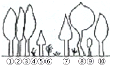
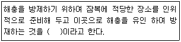
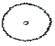

산림기능사 (2009-07-12 기출문제)
1과목: 조림 및 육림기술
1. 왜림 작업으로 가장 적합한 수종은?
- 전나무
- 가문비나무
- 아까시나무
- 향나무
(정답률: 79%)

2. 임목벌채를 개벌작업으로 실행할 때 1개 벌구를 몇 ha 내외로 실행하는가? (단, 경제림단지내의 경우는 제외한다.)
- 1ha
- 5ha
- 10ha
- 20ha
(정답률: 64%)
3. 천연갱신에 대한 설명으로 틀린 것은?
- 천연갱신은 그 임지의 기후와 토질에 가장 적합한 수종이 생육하게 되므로 각종 위해에 대한 저항력이 크다.
- 천연갱신지의 치수는 모수보호를 받아 안정된 생육환경을 제공받는다.
- 인공조림에서와 같은 수종 선정의 잘못으로 인한 실패염려가 많다.
- 임지가 나출되는 일이 드물어 적당한 수종이 발생하고, 또 혼효되기 때문에 지력유지에 적합하다.
(정답률: 86%)
4. 대나무 숲의 갱신은 원칙적으로 어떤 방법으로 벌채하는가?
- 개벌작업
- 산벌작업
- 택벌작업
- 중림작업
(정답률: 64%)
5. 회귀년(回歸年)을 필요로 하는 벌채 방식은?
- 개벌 작업
- 군상산벌 작업
- 택벌 작업
- 보잔목 작업
(정답률: 56%)
6. 성숙한 임분을 대상으로 벌채를 실시할 때 모수가 되는 임목을 산생시키거나 군상으로 남겨 두어 갱신에 필요한 종자를 공급하게 하고 그 밖의 임목은 개벌하는 갱신법은?
- 보잔목법
- 택벌작업법
- 보속작업법
- 모수작업법
(정답률: 78%)
7. 수풀을 띠모양으로 구획하고 2번의 개벌에 의해서 갱신이 끝나는 벌채 방식은?
- 넓은 인적의 개벌작업
- 교호대상 개벌작업
- 연속대상 개벌작업
- 군상개벌작업
(정답률: 71%)
8. 여러 가지 장해 요인이 많아 식재조림하기에 어려운 곳에 종자를 직접 뿌려 조림하기에 적당한 수종은?
- 낙엽송
- 졸참나무
- 전나무
- 단풍나무
(정답률: 49%)
9. 예비벌을 실시하는 목적과 거리가 먼 것은?
- 잔존목의 결실 촉진
- 부식질의 분해 촉진
- 어린나무 발생의 적합한 환경 조성
- 벌채목의 반출 용이
(정답률: 81%)
10. 현재 리기다소나무로 조성되어 있는 숲을 잣나무 숲으로 전면 갱신하고자 할 때 가장 적합한 작업종은?
- 개벌작업
- 제벌작업
- 산벌작업
- 택벌작업
(정답률: 88%)
11. 낙엽송이나 잣나무와 같은 바늘잎나무는 대개 몇 년을 전후하여 첫 번째 솎아베기를 하는가?
- 5년
- 10년
- 15년
- 20년
(정답률: 49%)
12. 나무를 심고 나서 바로 또는 몇 달 뒤에 비료를 주는 것으로, 묘목의 줄기를 중심으로 하여 가장 긴 가지의 길이를'반지름으로 하는 원둘레에 5~10㎝의 깊이로 구멍을 파고 그곳에 비료를 넣어 주는 방법은?
- 구덩이 전체 시비법
- 구덩이 및 시비법
- 구덩이 위 시비법
- 측방 시비법
(정답률: 70%)
13. 다음 그림에서 제벌작업 시 제거되어야 할 나무로 가장 잘 짝지어진 것은?

- ①, ⑧
- ④, ⑤
- ⑦, ⑨
- ②, ⑧
(정답률: 96%)
14. 산림 무육도구로서 가장 적합하지 않는 것은?
- 소형손톱
- 제례식 낫
- 손도끼
- 소형전정가위
(정답률: 66%)
15. 삽수의 발근을 비교적 잘 되는 수종, 비교적 어려운 수종, 대단히 어려운 수종으로 분류할 때, 비교적잘 되는 수종에 속하는 것은?
- 밤나무
- 측백나무
- 느티나무
- 백합나무
(정답률: 50%)
16. 중부 이북지방을 제외한 전국에 리기테다소나무의 식재를 권장하고자 할 때 그 이유로 가장 적합한 것은?
- 결실력이 강하므로
- 내충성이 리기다소나무 보다 강하므로
- 수지의 분비량이 테에다소나무보다 많으므로
- 내한력과 재질이 우수하므로
(정답률: 70%)
17. 택벌작업의 장점 설명으로 틀린 것은?
- 숲땅이 항상 나무로 덮여 있어 보호를 받게 되고, 겉흙이 유실되지 않는다.
- 위층의 나무는 햇빛을 잘 받아 결실이 잘 된다.
- 양수의 갱신이 잘 된다.
- 미관상 가장 아름다운 숲이 된다.
(정답률: 79%)
18. 묘목을 심을 때 뿌리를 잘라주는 주목적은?
- 식재가 용이하다.
- 양분의 소모를 막는다.
- 수분의 소모를 막는다.
- 측근과 세근의 발달을 도모한다.
(정답률: 94%)
19. 일반적으로 씨뿌리기에서 흙을 덮는 두께는 씨앗 지름의 몇 배 정도로 하는가?
- 씨앗 지름의 1~3배
- 씨앗 지름의 4~5배
- 씨앗 지름의 5~6배
- 씨앗 지름의 7배 이상
(정답률: 85%)
20. 우량목과 불량목의 비율이 어느 정도 되어야만 그 임분은 좋은 채종림이 될 수 있는가?
- 우량목 30% 이상, 불량목 10% 이하
- 우량목 40% 이상, 불량목 10% 이하
- 우량목 50% 이상, 불량목 20% 이하
- 우량목 70% 이상, 불량목 30% 이하
(정답률: 81%)
21. 낙엽송(묘령 2년)의 곤포당 본수는?
- 100
- 200
- 500
- 1000
(정답률: 61%)
22. 개벌작업의 장점은?
- 잡초, 관목 등 식생이 무성하게 된다.
- 병충해가 한번 발생되어도 크게 번지지 않는다.
- 수풀이 단조롭고 아름답다.
- 작업이 한 지역에 집중되어 간평하고 경제적으로 진행될 수 있다.
(정답률: 87%)
23. 묘목을 먼 곳으로 운반할 때 제일 먼저 주의할 사항은?
- 무게에 의하여 억눌리지 않도록 해야 한다.
- 손상이 오지 않도록 한다.
- 묘목이 건조해지지 않도록 한다.
- 포장을 크게 해야 한다.
(정답률: 84%)
24. 밤나무를 식재면적 1ha에 묘목간 거리 5m로 정사각형 식재를 할 때 총 소요 묘묙 본수는?
- 400본
- 500본
- 1200본
- 3000본
(정답률: 83%)
25. 택벌작업에서 벌채목을 정할 때 생태적 측면에서 가장 중점을 두어야 할 사항은?
- 우량목의 생산
- 간벌과 가지치기
- 대경목을 중심으로 벌채
- 숲의 보호와 무육
(정답률: 82%)
2과목: 산림보호
26. 다음 중 방화림(防火林)조성용으로 가장 적합한 수종 은?
- 소나무
- 삼나무
- 갈참나무
- 녹나무
(정답률: 74%)
27. 대기 중 관계습도와 산불 발생 위험도와의 관계 중 산불이 대단히 발생하기 쉽고, 소방이 곤란한 습도는?
- 60% 이상
- 50~60%
- 40~50%
- 30%이하
(정답률: 81%)
28. 식물에 병을 일으키는 병원체 중 균사를 갖고 있어 일명 사상균(絲狀菌)이라고 불리는 것은?
- 진균
- 세균
- 바이러스
- 선충
(정답률: 70%)
29. 다음 중 일종의 생리적인 병해에 해당하는 것은?
- 대나무류 개화병
- 낙엽송 가지끝마름병
- 소나무 잎떨림병
- 소나무 뿌리썩음병
(정답률: 85%)
30. 천막벌레나방의 설명으로 부적합한 것은?
- 버드나무, 살구나무 등을 가해한다.
- 유충이 실로 집을 짓고 모여 산다.
- 성충 수컷(♂)은 황갈색을 띠고, 암컷(♀)은 담등색을 띤다.
- 1년에 2회 발생한다.
(정답률: 76%)
31. 포플러잎녹병을 방제하는 방법으로 틀린 것은?
- 비교적 지행성인 포플러 계통을 식재한다.
- 4 - 4식 보르도액을 살포한다.
- 병든 잎이 달렸던 가지를 잘라준다.
- 중간기주 식물이 많이 분포하고 있는 곳을 피하고 식재한다.
(정답률: 57%)
32. 모잘록병의 방제법이 아닌 것은?
- 햇볕이 잘 쬐도록 한다.
- 파종량을 적게 하고 복토가 너무 두껍지 않도록 한다.
- 인산질 비료를 적게 주어 묘목을 튼튼히 한다.
- 병이 심한 묘포지는 돌려짓기를 한다.
(정답률: 82%)
33. 솔나방은 유충의 몇 령충으로 월동하는가?
- 1
- 3
- 5
- 8
(정답률: 79%)
34. 솔잎혹파리의 방제에는 기생봉을 이식하는 생물학적 방제를 활용하고 있다. 다음 중 솔잎혹파리의 기생봉이 아닌 종은?
- 솔잎혹파리먹좀벌
- 혹파리등뿔먹좀벌
- 솔잎벌
- 혹파리살이먹좀벌
(정답률: 75%)
35. 담배장님노린재에 의하여 매개 전염되는 병은?
- 오동나무빗자루병
- 대추나무빗자루병
- 잣나무 털녹병
- 소나무 잎녹병
(정답률: 70%)
36. 다음 ( )안에 적합한 내용은?

- 포살법
- 소살법
- 경운법
- 잠복장소유살법
(정답률: 87%)
37. 훈증제에 대한 설명으로 틀린 것은?
- 질식사를 시키는 방법이므로 임내에서의 활용은 어렵다.
- 에틸브로아이드를 많이 사용한다.
- 묘포장에서의 활용이 용이하다.
- 약제는 역상으로 해충에 침투한다.
(정답률: 49%)
38. 1968년 부산에서 처음 발견된 소나무재선충에 대한 설명으로 틀린 것은?
- 매개충은 솔수염하늘소이다.
- 유충은 자라서 터널 끝에 번데기방[용실＜埇室＞]을 만들고 그 안에서 번데기가 된다.
- 소나무재선충은 후식 상처를 통하여 수체내로 이동해 들어간다.
- 피해고사목을 벌채 후 매개충의 번식처를 없애기 위하여 임지 외로 반출한다.
(정답률: 79%)
39. 병원체는 자낭균 중에서 나출자낭을 형성하는 Taphrina wiesneri이고 포플러나 복숭아 잎의 뒷면에 나출자낭을 형성하고 오갈병을 일으키는 병은?
- 오동나무빗자루병
- 벚나무빗자루병
- 대추나무빗자루병
- 붉나무빗자루병
(정답률: 70%)
40. 농약의 독성을 표시하는 용어인 LD 50의 설명으로 가장 적합한 것은?
- 시험동물의 50%가 죽는 농약의 양이며 ㎎/㎏으로 표시
- 농약 독성평가의 어독성 기준 동물인 잉어가 50% 죽는 양이며 ㎎/㎏으로 표시
- 시험동물의 50%가 죽는 농약의 양이며 ㎍/g으로 표시
- 농약 독성평가의 어독성 기준 동물인 잉어가 50% 죽는 양이며 ㎍/g으로 표시
(정답률: 77%)
3과목: 임업기계일반
41. 기계톱 엔진에 있어 크랭크축이 몇 회 회전 시 마다 1회의 폭발, 배기 행정이 일어나는가?
- 1회
- 2회
- 3회
- 4회
(정답률: 75%)
42. 도끼자루의 길이가 어떤 것이 가장 좋은가?
- 작업자 신장의 1/3 정도가 좋다.
- 작업자 팔 길이 정도가 좋다.
- 작업자 팔 길이보다 짧아야 한다.
- 작업자 신장의 1/2이 좋다.
(정답률: 90%)
43. 기계톱 일일정비의 대상이 아닌 것은?
- 에어필터(공기청정기) 청소
- 안내판 손질
- 휘발유와 오일의 혼합
- 스파크플러그 전극 간격 조정
(정답률: 86%)
44. 산림 작업에서 개인 안전복장 착용 시 준수사항으로 가장 거리가 먼 것은?
- 몸에 맞는 작업복을 입어야 한다.
- 겨울에는 춥지 않게 목도리를 해야 한다.
- 가지치기 작업할 때는 얼굴보호망을 쓴다.
- 안전화를 반드시 착용해야 한다.
(정답률: 90%)
45. 기계톱날을 연마하고자 할 때 필요 없는 공구는?
- 평줄
- 원형줄
- 깊이 제한 척
- 쇠톱
(정답률: 75%)
46. 삼각톱날의 연마 준비물이 아닌 것은?
- 마름모줄
- 원형 연마석
- 톱니 젖힘쇠
- 원형줄
(정답률: 74%)
47. 내연기관에서 인접봉의 역할은?
- 크랭크와 피스톤을 연결하는 역할을 한다.
- 엔진의 파손된 부분을 용접하는 봉이다.
- 크랭크 양쪽으로 연결된 부분을 말한다.
- 엑셀 레버와 기화기를 연결하는 부분이다.
(정답률: 83%)
48. 벌도작업 시 정확한 작업을 할 수 있도록 지지 역할 및 완충과 지레받침대 역할을 하는 것은?
- 안내판
- 체인브레이크
- 지레발톱
- 스파크플러그
(정답률: 93%)
49. 삼각톱니 가는 방법 중 톱니 젖힘의 크기는 침엽수와 활엽수 각각 몇 ㎜로 작업하는가?
- 침엽수 0.3 - 0.5, 활엽수 0.2 - 0.3
- 침엽수 0.2 - 0.3, 활엽수 0.3 - 0.5
- 침엽수 0.3 - 0.4, 활엽수 0.4 - 0.6
- 침엽수 0.4 - 0.6, 활엽수 0.3 - 0.4
(정답률: 72%)
50. 기계톱 윤활유의 정액도가 SAE 20W일 때 사용 외기온도는 몇 ℃가 적당한가?(오류 신고가 접수된 문제입니다. 반드시 정답과 해설을 확인하시기 바랍니다.)
- 10~20
- -30~-10
- -10~10
- 30~50
(정답률: 75%)
51. 기계톱 작업에서 절삭두께 높이에 영향을 주는 것으로 옳게 연마하여 작업능률과 기계 및 체인의 수명을 높여야 하는 것은?
- 전동쇠
- 지레발톱
- 안내판
- 깊이제한부
(정답률: 91%)
52. 풀베기 작업, 조림지 정리, 어린나무 가꾸기 작업용으로 사용되는 예불기 날의 형태는?

(정답률: 61%)
53. 기계톱으로 원목을 절단할 경우 절단면에 피싱무늬가 생기며 체인이 한쪽으로 기운다면 어떤 원인인가?
- 측면날의 각도가 서로 다르다.
- 창날각이 고르지 못하다.
- 톱날의 길이가 서로 다르다.
- 깊이 제한부가 서로 다르다.
(정답률: 62%)
54. 기계톱의 연료 배합 시 휘발유 20L에 필요한 엔진오일의 양은?
- 0.2L
- 0.4L
- 0.6L
- 0.8L
(정답률: 84%)
55. 기계톱 기화기의 연료유입과 거리가 먼 것은?
- 피스톤의 상하운동
- 베르누이원리
- 연료펌프막
- 뜨게실
(정답률: 77%)
56. 기계톱날 세우기 각도로 올바른 것은?
- 반끌형 : 가슴각 80°
- 끌형 : 가슴각 80°
- 반끌형 : 창날각 30°
- 끌형 : 창날각 35°
(정답률: 70%)
57. 내연기관에 해당하지 않는 것은?
- 가솔린기관
- LPG기관
- 디젤기관
- 증기기관
(정답률: 90%)
58. 소형 동력윈치의 사용에 있어 일일점검 사항이 아닌 것은?
- 와이어로프 점검
- 기어오일의 점검
- 공기여과기 청소
- 볼트 및 너트의 점검
(정답률: 57%)
59. 벌목작업 시 고려할 사항이 아닌 것은?
- 벌목방향을 정확히 하여야 한다.
- 안전사고를 예방하기 위한 준칙을 철저히 지켜야 한다.
- 잔존목의 이용재적이 많이 나오도록 한다.
- 주변 임목의 피해를 가능한 감소시켜야 한다.
(정답률: 92%)
60. 일반적으로 가지치기 도끼의 무게는 몇 g 정도인가?
- 650~800
- 850~1250
- 1400~1800
- 2000~2500
(정답률: 63%)